6．自守函数
线性微分方程的理论尔后为庞加莱和克莱因所追研。他们引进的课题叫做自守（automorphic）函数，它不但对其他各种应用是重要的，而且在微分方程理论中也扮演着主要的角色。
庞加莱（1854—1912）是巴黎大学理学院的一位教授。他的著作几乎与欧拉和柯西一样多，包罗了数学和数学物理的广泛领域。我们没有机会讨论他的物理研究，其中包括毛细管引力、弹性学、位势理论、流体力学、热的传播、电学、光学、电磁理论、相对论，而尤为突出的是天体力学。庞加莱对他研究的每个问题都深刻洞察，并揭示出其本质。他敏锐地集中于一个问题，并细致地考察它。他还深深信赖于对一个问题的每个方面作定性的研究。
自守函数是圆函数、双曲函数、椭圆函数以及初等分析中其他函数的推广。函数sin z，当z换为z＋2mπ时，函数值不变，这里m是任何整数。也可以说，当z受到群z′＝z＋2mπ的任何变换时，函数sin z的值是不变的。双曲函数sinh z，当z受到群z′＝z＋2πmi中的任何变换时其值不变。椭圆函数在群z′＝z＋mω＋m′ω′的变换下，其值保持不变，这里ω与ω′是这函数的周期。所有这些群都是不连续的（这术语是庞加莱引进的），就是说，在群的变换下，任何一点的所有变式的数目在任何有界区域内都是有限的。
自守函数的名称今天已用于包括那些在变换群
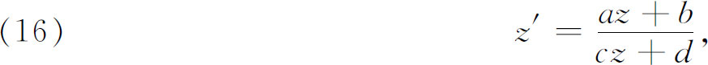
或这个群的某些子群作用下不变的函数，其中a，b，c，d可以是实数或复数，而ad-bc＝1。此外，在复平面的任何有限部分上，这群必须是不连续的。
研究得最早的自守函数是椭圆模函数，这些函数在模群或它的某些子群的作用下是不变的，所谓模群就是（16）的那样一个子群，其中a，b，c，d是实整数且ad-bc＝1。这些椭圆模函数是从椭圆函数导出的。我们这里不再继续讨论它们，因为它们与微分方程的基本理论无关。
更一般的自守函数是为研究二阶线性微分方程
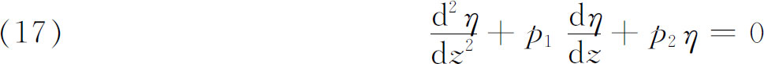
而引进的，其中p1和p2最初是z的有理函数。一个特殊情形是有0，1，∞三个奇点的超几何方程
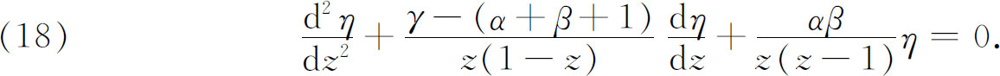
黎曼在他的1858年到1859年关于超几何级数的讲义里和1867年关于极小曲面的一篇遗著中，和施瓦茨(43)独立地各自确立了下面所说的理论。令η1和η2是方程（17）的任两个特解，于是所有解可以表示为
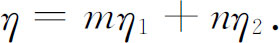
当z绕奇点的一条闭路径走过一圈时，η1和η2变成
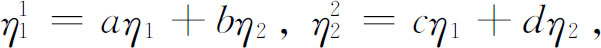
而令z绕所有奇点的诸闭路径运动时，就得到这种线性变换的整个群，它就是这微分方程的单值群。
现令
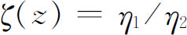
。当z绕闭路径走一圈时，这个商ζ就变为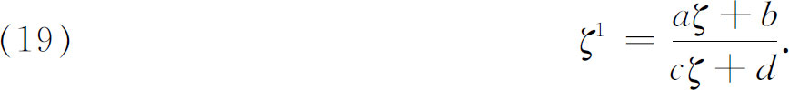
从（17）我们发现ζ满足微分方程
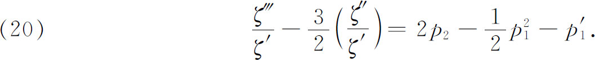
如果把（18）中的特殊函数取作（17）中的p1和p2，便得到
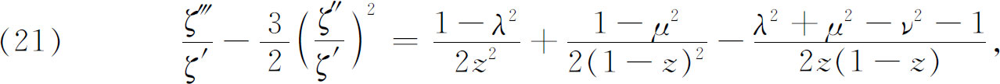
其中
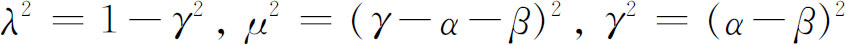
而λ，μ，ν取正数（α，β，γ是实的）。变换类（19）就是微分方程（21）的单值群。接着黎曼和施瓦茨证明了当λ，μ，ν是实数时，方程（21）的每个特解ζ（z）都是一个从上半z平面（图29.1）到ζ平面上的以圆弧为边，以λπ，μπ，νπ为角的曲线三角形的保角变换。
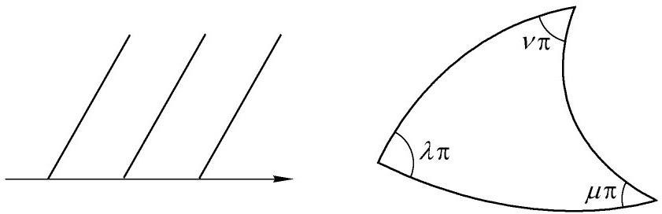
图29.1
在区域由三圆弧围成的情形下，如果这三角形的角满足一定条件，则ζ＝ζ（z）的反函数就是一个自守函数z＝ø（ζ），它的整个存在区域是半平面或圆。在ζ经线性变换（19）的群中的元素变换后，这函数保持不变，而变换（19）把上述那种形状的任一曲线三角形变到另一曲线三角形。给定的“圆边”三角形是这个群的基本区域。在这变换群的作用下，这个区域变成类似的三角形，它们的和覆盖了半平面或圆。这圆边三角形是椭圆函数情形里的平行四边形的类似物。
庞加莱和克莱因的工作从这个基点继续前进。1880年以前，克莱因在自守函数方面做了一些基本的工作。后来在1881年到1882年期间与庞加莱合作。庞加莱在受富克斯上述工作的吸引而注意这事后，对这课题也已做了先行的工作。1884年庞加莱在《数学学报》的前五卷中发表了关于自守函数的五篇重要论文。当这组论文的第一篇在《数学学报》的第一卷上发表时，克罗内克（Leopold Kronecker）警告编辑米塔列夫勒说，这篇不成熟和隐晦的论文会把这期刊扼杀掉。
以椭圆函数理论为指导，庞加莱发明了一类新的自守函数(44)。这类自守函数是考虑了方程
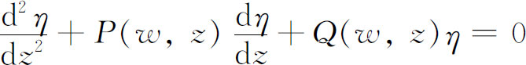
的两个线性无关解的商的反函数而得到的，其中w与z由多项式方程ø（w，z）＝0相连，而P与Q都是有理函数。这是富克斯型自守函数类，由在圆（叫做基本圆）内一致（单值）全纯函数组成，这圆在形如
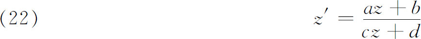
的线性变换类作用下是不变的，其中a，b，c，d是实数且ad-bc＝1。这些使圆和其内部不变的变换形成一个群，叫做富克斯群。施瓦茨函数ø（ζ）是富克斯型函数的最简单的例子。这样，庞加莱就证明了比椭圆模函数更为普遍的自守函数类的存在性(45)。
庞加莱关于自守函数的构造（在1882年的第二篇论文里）是根据他的θ级数做出的。设群（22）的变换是
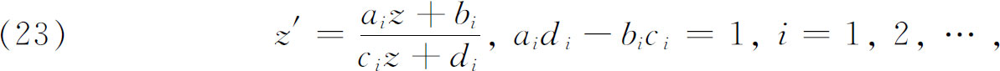
令z1，z2，…为z在群中的各种变换下的像。令H（z）是一个有理函数（撇开其他不重要的条件），于是庞加莱θ级数就是函数
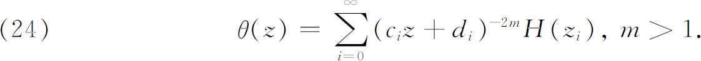
可以证明
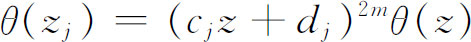
。现在令θ1 （z）与θ2 （z）是具有同一m的两个θ级数，这些级数不仅是单值函数而且是整函数。因此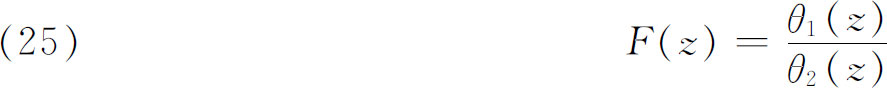
是群（23）的一个自守函数。按照这群是属于富克斯群还是克莱因群，庞加莱把级数（24）叫做θ-富克斯级数或θ-克莱因级数（克莱因群马上就要讲到）。
富克斯型函数有两类：一类存在于整个平面上，另一类只存在于基本圆的内部。如我们在上面所见，富克斯型函数的反函数是代数系数的二阶线性微分方程的两个积分的比。这种方程，庞加莱称之为富克斯型方程，可以用富克斯型函数的方法积分出来。
后来，庞加莱(46)把变换群（22）扩充到复系数的情形，并考虑了这种群的几种类型，庞加莱把这种群叫做克莱因群。这里我们必须满意地注意到，如果一个群在本质上是非有限的或非富克斯型的，但当然具有（22）的形状，并且在复平面的任何部分上是不连续的，那么这群便是克莱因群。对这些克莱因群，庞加莱得到了新的自守函数，即在克莱因群变换下不变的函数，庞加莱把它叫做克莱因函数。这些函数有类似于富克斯型函数的性质；然而，这些新函数的基本区域比圆要复杂。顺便说说，克莱因考虑了富克斯型函数，但富克斯倒没有考虑过。克莱因因此向庞加莱提过抗议。庞加莱的回答是把自己紧接着发现的一类自守函数叫做克莱因函数，因
为这些函数是某些人默默注意到的，从来都没有被克莱因考虑过。
后来，庞加莱指出如何借助于克莱因函数表示仅有正则奇点的代数系数的n阶线性方程的积分。这样，整个这类线性微分方程都可以用庞加莱的这些新的超越函数来解了。